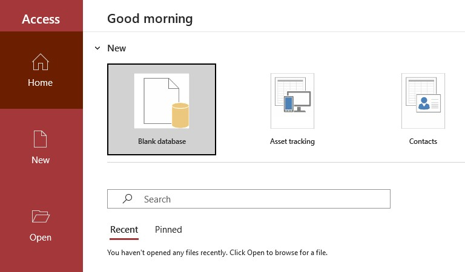
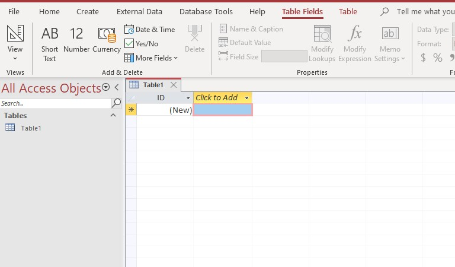
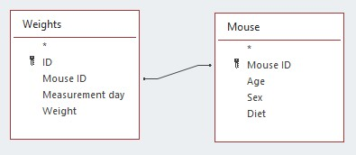
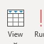
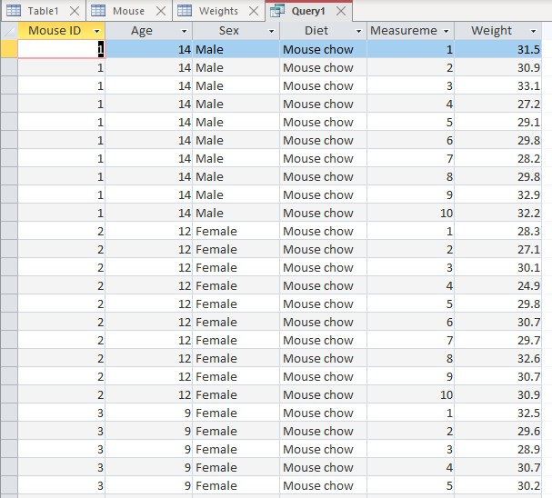
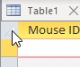
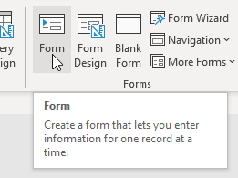

We are only going to spend one week on relational databases, but we could easily spend the entire semester on them. We will focus on what is probably the feature that is most likely to be of use to you, and that Excel does not support at all: one to many relational joins. Unless you decide to learn more about MS Access on your own, outside of class, you will probably enter data in Excel, import it into Access, join your tables, then export the joined tables back into Excel. That is what we will do today.
1. Download this spreadsheet (mice.xlsx), and save it to your H drive (make a new folder, ex2 - save the file to H:/biol365/ex2), and then open it in Excel.
The data represent an experiment in which ten different mice were given different diets, and then their body weights were measured daily for a period of 10 days. There are several characteristics of each mouse that were recorded (age, sex, and the diet they were on), which are stored in the sheet "Mouse". Each mouse was weighed once a day for ten days, and these weights are in sheet "Weights". To do a comparison of weights by diet, we would need to join the Mouse table to the Weights table. We can't do that automatically in Excel (only through laborious, error-prone copying and pasting), but we can do it easily in Access.
Be sure to close Excel before you proceed - Access won't open this file while Excel has it open.
2. Start MS Access 2013. You will see a fairly cluttered startup screen that looks like this. We are going to ignore much of the clutter, but most of it is providing easy access to templates for a variety of common business databases (Access is marketed heavily towards business users).
{kind=link}
First, click on the "Blank desktop database" button, which will bring up a "Blank desktop database" creation window. Name the database "mice.accdb", and click on the "open folder" icon next to the file name field. You can now navigate to a suitable folder on your H: drive, and click "OK" to select the folder. Back in the "Blank desktop database" window click on "Create" to create the blank database in the folder you selected.
3. You will now see the Access interface with a new, blank table called Table1 (it will look like this). Rather than using this blank table, we are going to import data from your Excel spreadsheet. Click on the "External Data" tab, and then click on "Excel". Browse to the "mice.xlsx" Excel spreadsheet you downloaded and select it. You will be importing the data into a new table, which is the default option, so click "OK".
{kind=link}
{kind=link}
{kind=link}
4. The "Import Spreadsheet Wizard" that pops up will lead you through the process of importing the data. You will only be able to do one sheet at a time, so start with "Mouse" - click "Next".
The next step asks whether the first row of the sheet contains the column headings. These will be used as the field names in Access - the sheet does include names for the columns, so click "Next".
The next step allows you to set the data type for each of the columns. It will make a guess based on the contents of the file, but you may not like the choices made and you need to check. Use the variable types:
- Mouse ID is numeric, but it only contains numbers up to 10 with no decimals, so change the Data Type from "Double" to "Integer" ("single" and "double" are both floating-point data types used for decimal numbers; double can record more significant digits than single).
- Ages are all integer numbers, so change the type to "Integer" (ages are in months, and none are greater than 255).
- The last two columns are text, which you can confirm Access guessed correctly.
Once you have the variable type definitions done, press "Next".
Primary keys
The next screen allows you to create a "primary key" for the table. A primary key is a unique identifier for every record in the data table, and relational databases have to have a unique identifier for every record. Access will allow you to create a new variable to use as a primary key, and populate it with sequential numbers for you, but if you have a unique identifier in your data set already you can use that instead. Since mouse ID will always be different for different mice you can use it as the primary key - click on "Choose my own primary key" and select "Mouse ID". Click "Next".
Finally, you are given the chance to change the name of the table if you choose - "Mouse" is fine, so don't change anything. Click "Finish". If you are prompted to save the import steps you don't need to - this is only useful if you repeatedly import data with the same organization, such as updating a database with new data each day.
You will see a new table called "Mouse" in the list on the left of the screen, and if you double-click it the table will open and show you the data (it should look like this).
{kind=link}
5. Repeat the import routine for sheet Weights. You will need to repeat steps 3 and 4, using Weights as the sheet to be imported.
Set the variables to the following data types:
- Mouse ID = integer
- Measurement Day = integer
- Weight = double (double refers to double-precision floating point numbers, which is a good choice for decimal data).
Allow Access to create a primary key for this table - since there are multiple records of the same mice we can't use Mouse ID as a primary key here.
When you're done you'll see a new table, Weights, in your list. Double-click it and you'll see this.
{kind=link}
Relational joins
6. Join the Mouse and Weights data based on matching Mouse ID's. Joining is done in a query, which is a term that refers to all manner of operations that retrieve data from a database.
To open the query design view switch to the "Create" tab, and select the "Query Design" option.
{kind=link}
{kind=link}
In the "Show Table" form that pops up, select and add both the Mouse and Weights tables. Close the "Show Table" form.
Now that you have the tables added, you are in the "Query Design" view. The tables you added are at the top, each showing a list of the fields they contain - we will be establishing the relationship between the tables (i.e. linking the tables by their matching columns) here. Below the tables is what looks like a blank spreadsheet - this is where we will actually build the query by selecting the fields from the joined tables that we want to display.
You'll see that since we have a field called "Mouse ID" in each table, Access guessed (correctly) that this is the column that's common between the tables, and that should be the basis for joining them together. You can see this as a black line that connects the two tables, like this. It's nice when Access guesses the relationship correctly, but you need to learn to do this yourself - so, click on the black line to select it, then hit the "delete" key. To make the connection yourself, click on the "Mouse ID" label in the "Mouse" table, drag it to the "Weights" table, and then drop it on top of the "Mouse ID" label there.
{kind=link}
We have a single column that defines the matching rows in our data, but you can actually have more than one column that indicates the relationship. For example, if we had mice with two different strains, with each mouse numbered sequentially within a strain, we would need the combination of strain and mouse number to uniquely identify the mice. All we would need is a column in each table that indicates the strain, and another that indicates the mouse number. We could then make two links between the tables, one that linked the strain columns and another that linked the mouse numbers, and Access would be able to join the records correctly.
If you double-click on the black line, you'll see that there are different ways to make the link between the table. The difference between them is in which records will be displayed in the event that there are Mouse ID's in one that aren't found in the other. The choices are:
- Only include rows where the joined fields from both tables are equal
- Include ALL records from "Mouse" and only those records from "Weights" where the joined fields are equal
- Include ALL records from "Weights" and only those records from "Mouse" where the joined fields are equal
You will want to use the first option when either you know that all the records match between the tables, or when you want to drop data from the query if the records are incomplete. The second and third cases are useful to help you identify where there are missing values in one table or the other. You can click on the "Cancel" button to close the Join Properties.
Queries
9. Now that the tables and their relationships are all set up, we can build the query to combine the fields in Mouse with the fields in Weights. Double click on the following fields to add them to the query:
- Mouse table - Mouse ID, Age, Sex, and Diet
- Weight table - Measurement Day, and Weight
Note that we only included Mouse ID once (it doesn't matter which table it comes from), and we didn't include the ID primary key field from the Weight table at all. In this sense we are not only using the query to combine information from both tables, we are also using it to filter which fields are to be included.
10. Execute the query. To run the query, click on "View" to switch from design view (in which you build the query) to datasheet view (in which you see the result). You should see a table with the weights for each day, but now with all the Mouse table fields repeated for each day of weighing (like this).
{kind=link}
{kind=link}
Note that this joined file has all the ages, sexes, and diets repeated for each day of measurement, without having to actually enter this information multiple times.
Also, be aware that the query is a temporary, on-the-fly arrangement. Queries can be saved and re-executed to re-create a view of the joined files, and queries can even be used as though they are tables - you can make a query that uses another query as a table, for example. Given this, it is generally not needed to make a permanent table from a query for use within Access.
However, to use the joined data to do some analysis in another program, such as Excel, you will need to export the query. That's what you'll do next.
Exporting a query to Excel
11. Export the joined file to an Excel spreadsheet. The simplest, quickest way to get the data back into Excel is to copy and paste it. Open the mouse.xlsx file in Excel, then click on the box in the upper left corner of the Access query (here) to select all the records. Right-click and copy them, and then switch to Excel and paste them in sheet 3.
{kind=link}
Another way is to export the data to an Excel spreadsheet file. First, save the query (click on the save icon, and call it "Joined files"). It now appears below the Weights table in the list to the left of the screen. Select "Joined files" from the list, right-click and select "Export" → "Excel". In the wizard that pops up, put the new "Joined files.xlsx" file onto your H: drive. If you then open the file in Excel, you will have a joined version of the tables, ready to summarize in a pivot table.
12. Export just the Females. We already used the query to decide which variables to include and not include in the data set, but we can also filter the data within a variable like we did in Excel. To do this, you will go back to the Design view for your Joined files query, and add a statement that will only return records for female mace.
If it isn't open, double-click on the Joined files query. In the upper left end of the Home tab, click on View (if a drop-down menu pops up, select Design. Otherwise clicking on View should open up the Design view by default). You should see your joined tables, with your fields below.
If you look at the field list in the lower panel, you'll see that on the left side are the labels "Field", "Table", "Sort", "Show", "Criteria", and "or". To only show the females, you need to add a Criteria to the Sex column. In the Criteria cell (just below the Show checkbox), type "Female" (with or without quotes - if you don't use quotes Access will add them). Note that this will only work if you type Female correctly - don't add spaces after it, or before it, or change to lowercase.
If you run this, you will see only female data in the result. Right-click on the tab for the query and save it again so that the new Females criteria is saved.
You can now export this version of the query by right-clicking on the query, and save it as "Joined files females.xlsx".
Forms
Another excellent reason to use a relational database is that it's possible to create data entry forms that make data entry and retrieval easier. It's possible to make an Access form match the appearance of a paper form that you use to collect data so that data entry is less confusing.
When you have a one to many relationship between data tables, like we do, it's also possible to use a form to make it easier to enter data into both tables at once. In our case, we can enter new "mouse" level information in one part of the form, and enter the daily measurements of weights into another part of the form, and the information will be automatically placed in the correct table.
1. Make sure you have the "Mouse" table selected in the table list on the left side of your database window. Switch to the "Create" tab, and then "Form" button (here). This will make a basic form that includes all of the fields that are in the "Mouse" table.
{kind=link}
You will be automatically put into "Layout" mode, which is used to design the appearance and behavior of the form. At this point you can also scroll through the records in the "Mouse" table by clicking on the navigation buttons at the bottom of the form window (here).
{kind=link}
Initially, only fields from the "Mouse" table were included, but we would also like to include the daily weight measurements we collect. There is a one to many relationship between each record in the "Mouse" table and records in the "Weights" table, so we want to make the form show us all of the weights for whatever mouse is currently displayed. To do this we need to add a subform.
2. Find the subform button in the list of available controls above the form (herehere). As you move down over the form, you will see a red dimension line that indicates where the subform will be positioned if you click the mouse - move your mouse so that the dimension line is below the fields that are already in the form (below Diet), and left-click the mouse.
{kind=link}
The subform is initially blank, and has a label on the left that is called "Child14:" - we'll fix both of those issues next.
3. Double-click on the "Child14:" label, and it will become editable - change it to "Weights".
Now, select just the blank box to the right of the label - this is where the data will appear, once we tell Access where to get it.
When you select the field, the "Property Sheet" on the right side of the database window will show a long list of properties, in several tabs. The first tab gives a long list of appearance settings - we will leave those alone. You should see though that "Child14" is listed in the dropdown menu box above the tabs - this means that all of the properties pertain to our subform.
You can change the name of the subform to something easier to remember - switch to the "Other" tab and change the "Name" from "Child14" to "WeightSubForm" (no spaces, use capitals to separate words). You'll see that the name changes in the dropdown menu, so we still are seeing properties of our subform.
Now, switch to the "Data" tab in the "Property Sheet". We need to identify the "Weights" table as the source of data to display in this subform, so drop down the "Source Object" menu and select the "Weights" table. You'll see the table appears in the subform.
We also need to tell Access how the data in the subform relates to the data in the main form. We do this by clicking on "Link Master Fields" and then clicking the ellipses button (...) - Access will notice we have two fields with the same name in each table, and will suggest them as the fields to use to link the tables. The "Master" Mouse ID refers to the main form that has "Mouse" fields in it, and the "Child" Mouse ID refers to the subform that has the "Weights" fields. Access guessed right, so click "OK" to accept the choices.
The subform has its own set of navigation controls - you can scroll through the individual weight records using the subform navigation tools, and can scroll from one mouse to another using the main form navigation controls. As you switch from one mouse to another you will see that only the records for the mouse selected in the main form are displayed in the subform.
4. To finish making the form, re-size the subform by dragging the lower right corner down until all ten days of measurement are showing.
Now that the form is done, drop down the "View" button and change it to "Form view" - this will disable editing, and prevent you from accidentally changing the form itself.
5. Let's see what this does for us when it comes to data entry. Scroll the main form to the first mouse, Mouse 1.
In the subform window, enter the following:
ID: No change, this field gets filled in automatically (it's the primary key for the table).
Mouse ID: No change, the ID is filled in automatically because it is the field that joins the two tables (having Mouse ID 1 in the main form makes these all Mouse ID 1 as well).
Measurement: 11
Weight: 30
Hit "Enter" after you enter the weight so that it is accepted as an entry.
Once all the fields are filled in, open the "Weights" table from the Tables list and you'll see your new entry at the very bottom of the table.
To start a record for a new mouse, switch back to your form, and click on the "New (blank) record" button in the navigation tools at the bottom of the form (here). A new main form record is added, and since there are no matching weights for this new animal the subform goes blank. Enter the following into the main form:
{kind=link}
Mouse ID: 11
Age: 2
Sex: Female
Diet: Cheese (yeah, I know...but it will make the record easy to find once you're done)
Hit Enter and open the "Mouse" table - you should see this new record listed (if the table is already open you may need to close its tab and open it again to see the new record).
You can switch back to your form and add some rows - feel free to put in whatever you want just so you have something to see - and you'll see it show up in the Weights table, with the needed Mouse ID to keep the weights linked to the mouse information.
Right-click on the tab for your form and select "Save".
Assignment
When you're done, post a copy of your Access database file and your two Excel files with your exported queries to the class web site.